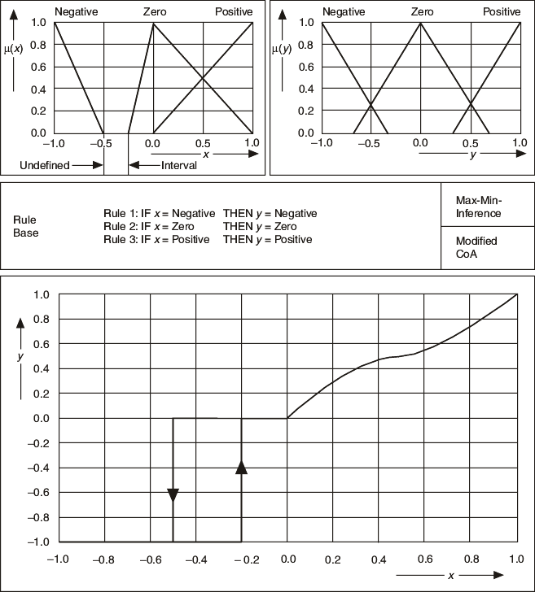

If the rule base has undefined intervals within input and output linguistic terms, or if the rule base is incomplete, you must specify the output of the fuzzy controller. If no rule is available for a certain situation, the output value remains undefined. One way to avoid this problem is to leave the current output value unchanged until the controller encounters a situation that is covered by the rules. The following image shows the resulting effect on the controller characteristic.

If you use an old output value as a default value, undefined intervals or incomplete rule bases can lead to hysteretic effects on the controller characteristic.
You can use non-overlapping, rectangular-shaped consequent terms to obtain an exact linear controller characteristic for a single-input controller. In this case, both the area and momentum vary linearly with the degree of truth, and overlapping regions of the output linguistic terms do not cause any distortion.